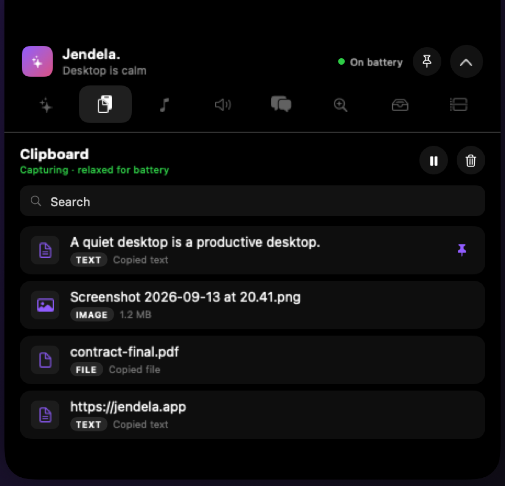

Move the pointer to the top of the screen and your clipboard, notes, music, files and next meeting are already there. Move away and it disappears.
Free for 14 days · no account · macOS 15 or later

Seven tabs. Turn off the ones you don't want — the hub resizes to whatever is open.
Hundreds of copies, searchable and pinnable. Click to copy, drag straight into another app, double-click for a full preview of an image or a long piece of text.
LicensedReal rich text on the desktop — bold, underline, alignment — behind every window until you want it. As many notes as you like, wherever you put them.
FreeNow playing and transport for Music, Spotify and YouTube Music, with artwork. Or a waveform beside the notch while something plays.
FreeDrag files onto the notch to hold them while you navigate somewhere else, then drag them out. It holds paths, not copies.
LicensedYour next meetings with a join button when the invitation has a link, plus this Mac's battery and your AirPods at a glance.
LicensedA quick question without leaving what you're doing — running on your own ChatGPT account, so there's no extra subscription and nothing goes through us.
LicensedVolume, mute and output switching, reading the real system devices rather than a copy of them.
FreeNote, clipboard, clock and photo widgets for the macOS desktop, managed by the system so they cost nothing when nothing changes.
LicensedBlack out the menu bar in your own wallpaper so the camera housing disappears. Rendered once; your original is kept and restored when you turn it off.
FreeA background app costs you battery through wakeups, not work. Jendela. is event-driven almost everywhere: music, audio and power changes arrive as system notifications rather than being polled.
The clipboard is the single thing macOS gives no notification for. It's checked on an interval that stretches when the hub is closed or the Mac is on battery, with a tolerance so the wakeup rides along with others instead of waking the CPU alone.
Low Power Mode, thermal pressure and unplugging are all watched. Decorative motion stops, blur is dropped, polling relaxes — automatically, or force it on.
Opening at login is off until you ask for it, and it's registered the way macOS expects so it shows up in System Settings where you can overrule it.
There is no account, no server and no analytics in the app.
History is stored encrypted with a key from your keychain — a clipboard is the most sensitive file a utility like this can leave behind. Copies from apps you exclude are never recorded, and anything a password manager marks concealed is skipped.
The app carries only a public key: it can check a licence is genuine but never has to phone home. It keeps working on a plane, and years from now.
Nothing is requested at launch. Calendar, Automation and Accessibility are each asked for the first time you use the feature that needs them, and the app is useful without granting any of them.
Fourteen days of everything. After that the hub, notes, music and sound keep working — for good.
A lifetime licence is only honest if the app can outlive the company selling it. There is no server to keep running, so it can.
Yes. On a Mac without one the hub uses the menu bar height instead and behaves the same. Hiding the notch obviously does nothing there.
None at launch. Controlling Music or Spotify asks for Automation the first time you press play. YouTube Music uses the media keys, which needs Accessibility. The Day tab asks for Calendar. Everything else needs nothing, and each feature explains itself before the system prompt appears.
Because it is a web page rather than an app, it publishes no track information. Jendela. reads the browser tab title, which gives the song. For cover art and true play state it also needs Chrome's View → Developer → Allow JavaScript from Apple Events, and the app tells you so rather than quietly showing nothing.
Not for call state. Discord only exposes that through its RPC interface, which requires a registered application and your authorisation, so the overlay's camera and share switches are set by you. Whether Discord is running is detected properly.
No. It never leaves the Mac and is stored encrypted. There is no sync, no account and no analytics.
The hub, notes, music, sound and hiding the notch keep working permanently. Clipboard history shortens to five entries rather than disappearing, and the shelf, Day, Ask and widgets ask for a licence. Nothing you wrote is taken away.
macOS 15 or later, Apple silicon or Intel.
Fourteen days of everything, no account, nothing to cancel.
macOS 15 or later